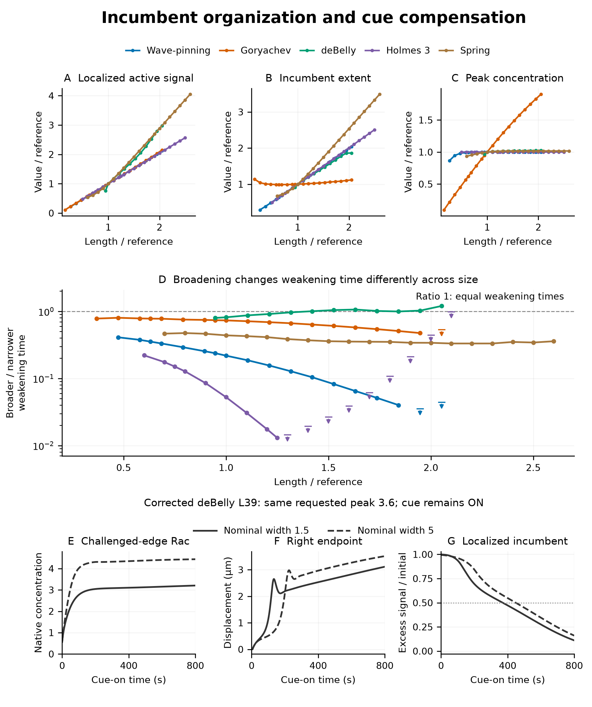
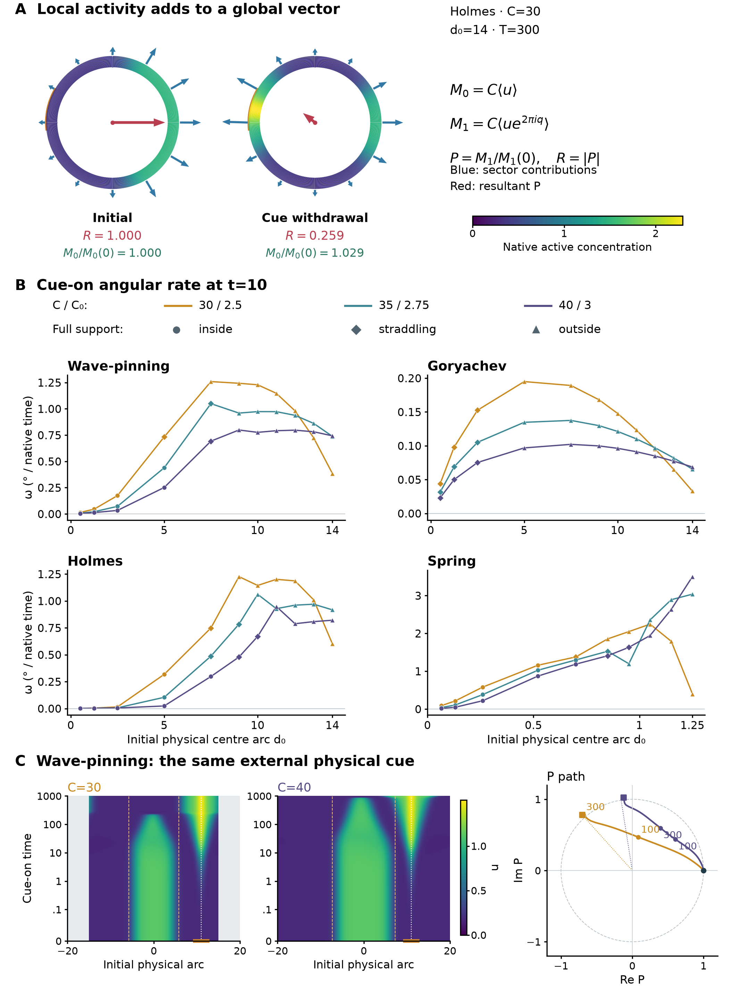
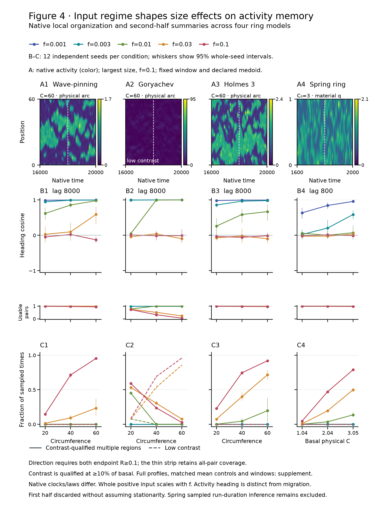

Generated 2026-10-19T22:04:38.435299+00:00. Static final assembly; no timed refresh.
Three main figures with legends · Comprehensive supplementary figures · Editable legends
All-five incumbent organization, an all-length broadening comparison and a native coupled activity/motion example. The core campaign contains 3,492 protocols plus two targeted withdrawals.

Figure2: complete five-model width, strength and duration experiment (5 pages)
Figure2: full deBelly L39 native history (1 pages)
Figure2: full deBelly L18 native history (1 pages)
Detailed measurement definitions and limits
All 645 stationary-cue protocols, with inside/straddling/outside footprints distinguished. The main connects the measured complex vector, complete early-rate comparison and native field histories.

Figure3: all qualified basals and129 initial cue footprints (1 pages)
Figure3: Wave-pinning complete systematic outcomes (5 pages)
Figure3: Goryachev complete systematic outcomes (5 pages)
Figure3: Holmes complete systematic outcomes (5 pages)
Figure3: Spring complete systematic outcomes (5 pages)
Figure3: clean external-cue exact-RHS histories (1 pages)
Figure3 data appendix: Wave-pinning native-profile atlas (15 pages)
Figure3 data appendix: Goryachev native-profile atlas (15 pages)
Figure3 data appendix: Holmes native-profile atlas (15 pages)
Figure3 data appendix: Spring native-profile atlas (15 pages)
Comprehensive supplementary legends and methods
The 936-case core campaign includes 816 noisy realizations and 120 controls. Short native histories, memory with usable-pair coverage and spatial organization form the main; 26 targeted Goryachev transition cases are separate supplementary evidence.

Figure4: complete strength, window, organization and native-profile results (32 pages)
Figure4: native profiles, basals and matched-mean controls (1 pages)
Figure4: targeted Goryachev transition refinement (2 pages)
Measurement definitions, controls and qualification scope